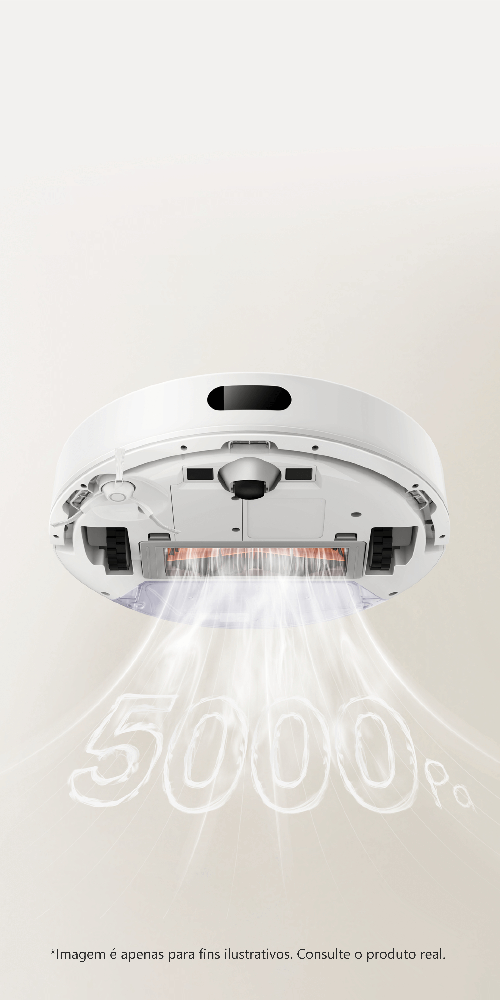
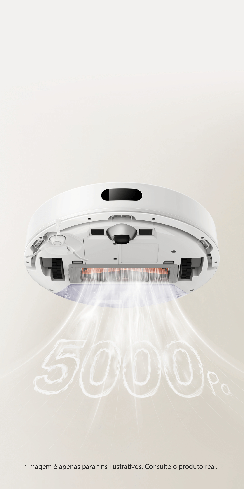

Xiaomi
Robot Vacuum S20Compacto, inteligente e poderoso

Aspira e esfrega de forma eficiente
para economizar seu tempo
Limpeza inteligente e sem sujar as mãos


Simula a limpeza manual
para maior eficiência
Sucção potente de 5000Pa
Limpa o chão em uma única passada
Equipado com um poder de sucção de 5000Pa e 3 modos de potência, ele elimina facilmente poeira e cabelos do chão e de cantos de difícil acesso, proporcionando uma limpeza profunda.
 

Reservatório 2 em 1 de alta capacidade para tanque de água e poeira.
Diga adeus ao esvaziamento frequente do
compartimento de poeira e a constante recarga de água
Compartimento de poeira de 400mL: Apenas esvazie nos fins de semana.
Tanque de água de 270mL: Sem necessidade de reabastecimentos frequentes.


Rota de limpeza em zigue-zague e
rota de esfregação em forma de Y
Eficiência de limpeza
significativamente melhorada
A rota em zigue-zague garante a máxima eficiência de limpeza, enquanto a rota em forma de Y é especialmente projetada para esfregar, simulando a limpeza manual ao esfregar a mesma área em duas direções, removendo manchas sem esforço.

Mapeamento inteligente e
planejamento de rotas
Detecção com alcance de 360 graus
Limpeza aprimorada
O Robô Aspirador Xiaomi S20 pode escanear rapidamente seu entorno para criar layouts precisos da casa no aplicativo Mi Home/Xiaomi Home e planejar as rotas de limpeza mais eficientes. Deixe este robô aspirador mostrar o quão inteligente ele pode ser.

Sistema de navegação a laser LDS
Mais precisão em todos os sentidos
A navegação a laser é uma tecnologia avançada e comprovada na indústria. Possui muitas
vantagens em comparação com tecnologias vSLAM e navegação por inercial, como
posicionamento altamente preciso, medições mais precisas e operação mais estável.
Funciona
normalmente
até no escuro

Mapas precisos no aplicativo
Atende às suas necessidades
Após mapear sua casa, você pode personalizar os planos de limpeza com base nas suas necessidades. Deixe-o limpar sua casa exatamente como você deseja.
Tamanho compacto para
maior mobilidade
Múltiplos sensores
Evita colisões e travamentos
Os sensores embutidos permitem que o Robô Aspirador Xiaomi S20 detecte facilmente ambientes
complexos, reduzindo efetivamente colisões, quedas e outros problemas para uma limpeza mais tranquila.
Tamanho compacto de 32,5cm
Fácil de armazenar
Com design compacto o Robô Aspirador Xiaomi S20 é fácil de armazenar, adequado para sua casa.
Limpeza inteligente
onde você quiser
Fácil de controlar remotamente
Desfrute de mais funções de limpeza
Use o aplicativo Mi Home/Xiaomi Home para controlar o robô aspirador remotamente e acompanhar o progresso da limpeza.
Memorização do
mapa para minimizar a
limpeza repetida


Controle de voz via alto-falantes inteligentes
Operação fácil com comandos de voz
O Controle de Voz funciona com Amazon Alexa ou Google Assistant


Avisos legais:
*Ventilador potente de sucção de até 5000Pa: Um manômetro com faixa de medição de 0 a 35kPa e precisão de 0,01kPa foi usado para testar a potência
de sucção de vácuo na entrada do robô aspirador totalmente carregado. O maior resultado foi de 5000Pa. Dados provenientes do Laboratório
Shanchuan. Os resultados podem variar em ambientes de teste.
*Compartimento de poeira de 400mL: O compartimento foi preenchido com pequenas partículas de plástico até transbordar. Um compartimento vazio e
um cheio de partículas plásticas foram pesados separadamente com uma balança eletrônica. A diferença de peso (ou seja, o peso do plástico) dividida
pela densidade do plástico correspondeu ao volume do compartimento de poeira. Todos os resultados dos testes foram ≥ 400mL.
*Tanque de água de 270mL: O tanque de água foi preenchido com água primeiro; em seguida, a água do tanque foi despejada em um cilindro de medição.
O volume da água despejada no cilindro de medição correspondeu ao volume do tanque de água. Todos os resultados dos testes foram ≥ 270mL.
O volume do tanque de água pode diferir em até 5% devido aos processos de fabricação; isso está dentro da faixa normal.
*Todas as funções exibidas nesta página são para fins ilustrativos. Consulte o produto real.
*A menos que especificado de outra forma, todos os dados e condições de teste exibidos nesta página vieram do Laboratório Shanchuan.